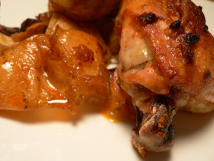

Mom's smoked-paprika chicken
Mom's smoked-paprika chicken

Mom really got into the smoked Spanish paprika thing after I moved out of the house, which I find highly unfair. But I benefit from it when I’m in Pittsburgh, and I finally tried it myself last night. She uses it with amazing results on roast chicken; I rarely roast a whole bird, so I used thighs.
The smell of this meat as it cooks is overpowering, so keep a snack handy while it’s in the oven, or you may faint. Heating up the leftovers tonight was torture all over again.
I’ll give it to you straight from the horse’s mouth, not that she resembles a horse in any way: “You could try that paste I make for roast chicken: mix a big tablespoon of paprika, kosher salt, crushed garlic, a few drops of lemon juice, and enough olive oil dribbled in to make a paste, and then smear it on the chicken and roast it until it’s done. It makes the skin taste really good.”
And right she is. I rubbed some on and under the skin, and the chicken bursted with flavor. I used Rey de la Vera, which is widely available at fancy grocery stores in New York (such as Balducci’s). Kalustyan’s claims to have several varieties, including the elusive bittersweet.
Comments
That sounds delicious. Roast chicken is a wonderful thing for this kind of sustained bitter cold weather we’re having on the east coast. Nothing like keeping the house warmer and filling it with wonderful cooking smells on a cold, cold day.
I couldn’t agree more, Julie, and I’m going to go out on a limb here and say that I think roast chicken is the most man-pleasing dinner I know how to make. Yes, I know they like steak and potatoes, but almost every guy can throw a steak on the grill for himself. A good roast chicken, now; that requires a little bit of kitchen know-how, particularly if you make gravy to go with it, along with rice (our favorite) or mashed potatoes.
But back to the paprika – I was just getting some groceries at McGinnis Sisters and my jaw dropped when I saw that one of the mass-marked spice purveyors, either McCormick or Spice Hunter, has started to carry smoked Spanish paprika!! There it was, in a little jar, along with all the other jars of spices and herbs, for around $4. And after I made Leland trek all over the city getting me some to bring with him to Pittsburgh this weekend…
Add a comment